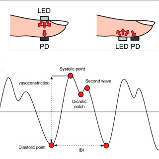
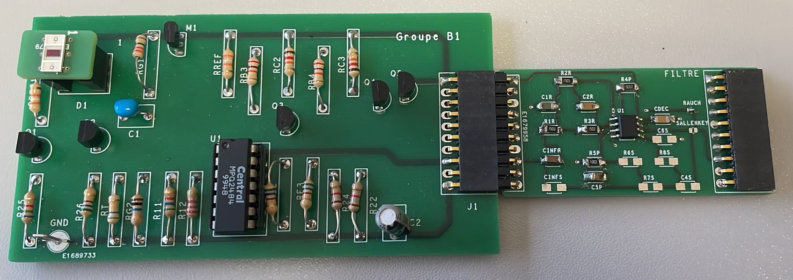
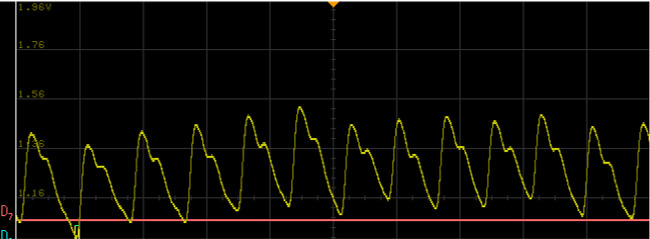
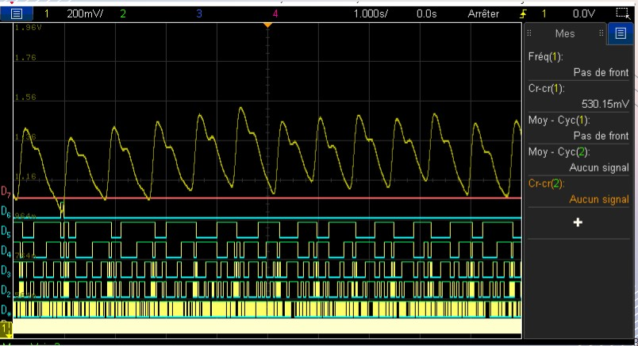
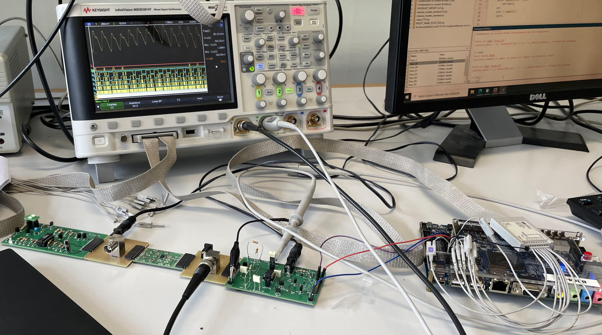

Ce projet repose sur le principe de la photopléthysmographie (PPG), une technique optique permettant de mesurer les variations de volume sanguin liées aux battements du cœur.
L’objectif du projet est l’acquisition d’un signal cardiaque, son amplification et filtrage analogique, puis sa numérisation sur FPGA afin de réaliser un traitement numérique du signal.
Le signal issu du capteur PPG étant de très faible amplitude, nous avons conçu notre propre carte électronique (PCB) dédiée à l’amplification et au filtrage analogique.
Les composants ont été dimensionnés, puis soudés manuellement afin d’obtenir un signal exploitable, débarrassé du bruit et des composantes indésirables.


Une fois le signal analogique conditionné, il est échantillonné à l’aide d’un convertisseur analogique-numérique (CAN) intégré au système sur FPGA.
Le signal est numérisé sur 8 bits, ce qui permet son exploitation dans une chaîne de traitement numérique.


Le signal numérisé est ensuite traité numériquement afin d’extraire des informations pertinentes.
Ce traitement permet notamment d’analyser les battements cardiaques et de déterminer des indicateurs tels que la fréquence cardiaque.
Cette étape met en œuvre des techniques de traitement numérique du signal appliquées à un cas concret de biométrie.